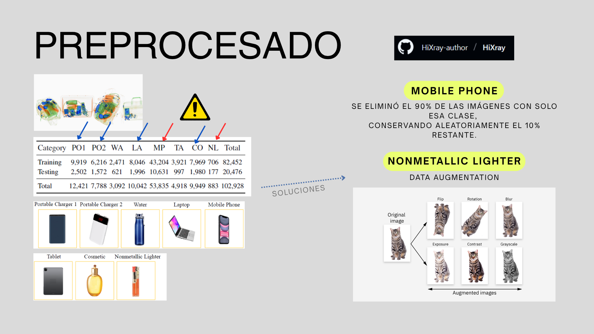
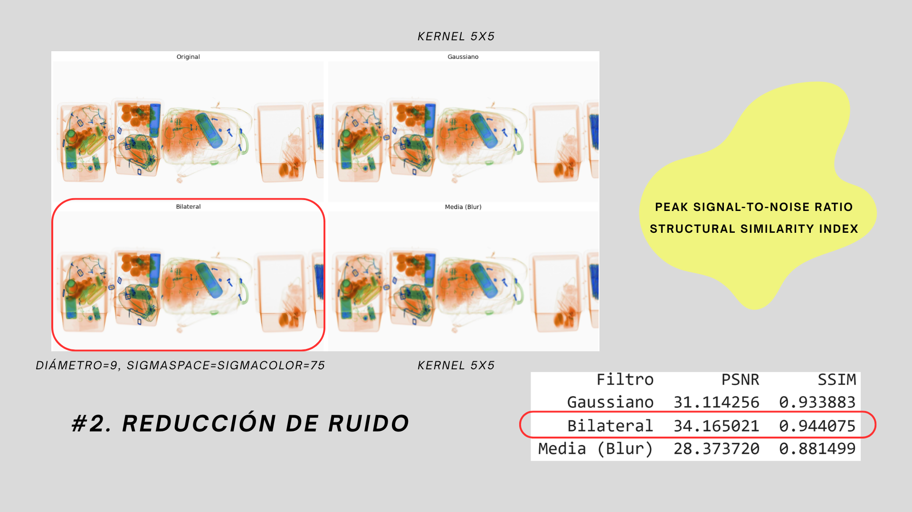
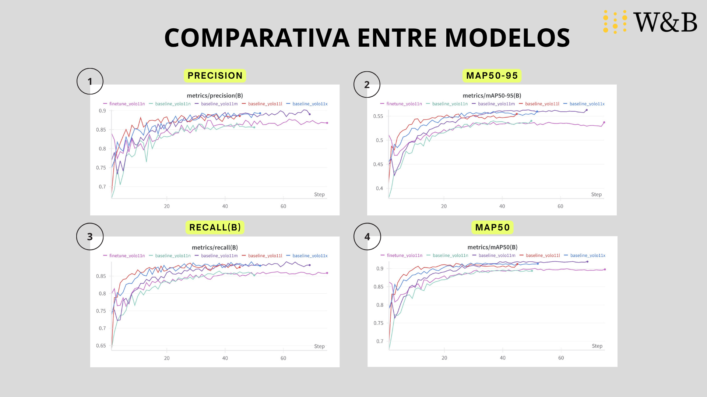
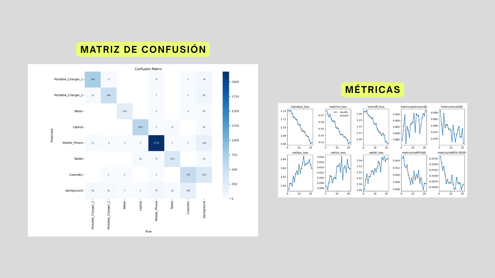
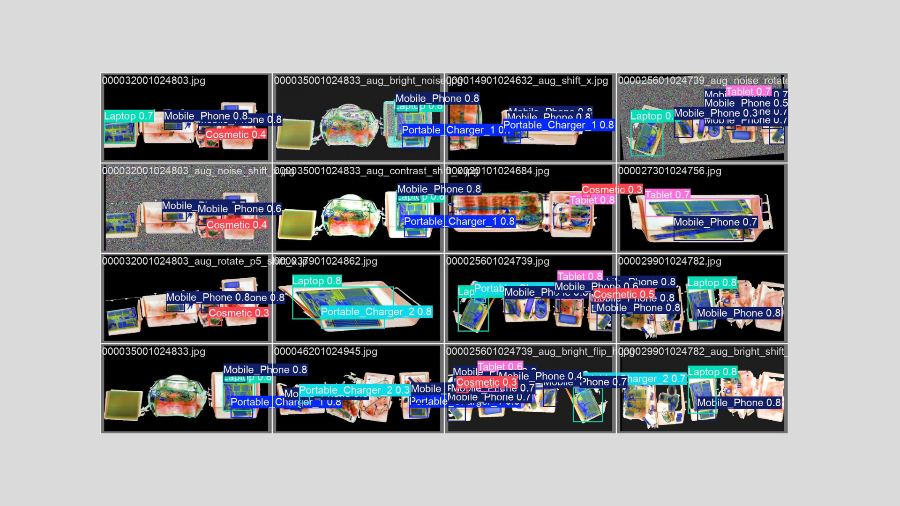

X-Ray Baggage
Object Detection
Preprocessing pipeline and comparative evaluation of YOLOv11 models (n, m, l, x) on the HiXray dataset for security screening - achieving 90.8% mAP@0.5, outperforming all prior HiXray-specific baselines including SSD, FPN, PANet, and MuBo.
What this project is
Airport security scanners produce X-ray images where threat objects - laptops, chargers, lighters, cosmetics - appear as overlapping, semi-transparent shapes with unusual colour encodings. Automated detection in this domain is genuinely hard: the HiXray dataset has over 102,000 training and test images across 8 classes, but is severely imbalanced (Mobile Phone accounts for 53,835 instances; Nonmetallic Lighter has only 883).
Our work had two distinct phases: building a preprocessing and dataset balancing pipeline from scratch using custom Python scripts, then training and comparing the full YOLOv11 model family (n, m, l, x) with Weights & Biases for experiment tracking. The results substantially exceeded the published HiXray baselines.

8 classes: Portable Charger 1, Portable Charger 2, Water, Laptop, Mobile Phone, Tablet, Cosmetic, Nonmetallic Lighter. Total: 102,928 annotated images. Mobile Phone dominates with 53,835 training instances vs 706 for Nonmetallic Lighter - a 76× imbalance.
Phase 1 - Preprocessing
Building a clean, balanced dataset
Before training a single model, we spent significant effort cleaning and rebalancing the dataset. Raw HiXray cannot be fed to YOLO directly - it requires format conversion, class balancing, and image quality improvement. We wrote two diagnostic scripts and a full 6-step image processing pipeline.
Dataset consistency check
numero_de_archivos_igual.py - verifies that every image has a corresponding label file. contar_elementos_clases.py - counts instances per class and images per class to quantify the imbalance before any intervention.
Class balancing - Mobile Phone (90% reduction)
Mobile Phone appeared in 53,835 training images - over 52% of the dataset. We randomly removed 90% of images where Mobile Phone was the only label, retaining a random 10%. This reduced dominance without losing samples that co-occurred with rarer classes.
Data augmentation - Nonmetallic Lighter (class 7)
With only 706 training instances, Nonmetallic Lighter needed synthetic expansion. We applied: horizontal flip, rotations ±5°, brightness/contrast variation, Gaussian noise, horizontal/vertical shifts, and zoom crops - generating new samples while preserving label alignment.
Resize to 1000×520
All images resized to a consistent 1000×520 resolution. YOLO internally resizes to 640×640 during training, but consistent input dimensions stabilise the preprocessing pipeline and reduce I/O variability.
Noise reduction - bilateral filter selected
We evaluated three filters: Gaussian (kernel 5×5), Bilateral (diameter=9, σ=75), and Mean Blur (kernel 5×5). Bilateral won on both PSNR (34.17 vs 31.11) and SSIM (0.944 vs 0.934) against Gaussian, while preserving edges - critical for detecting object boundaries in X-ray images.
Normalisation + CLAHE contrast enhancement
Pixel values normalised to [0, 1] by casting to float32 and dividing by 255. Contrast enhanced with CLAHE applied per colour channel (not grayscale-converted) - preserving the colour encoding used by X-ray scanners to differentiate material density, which is essential for distinguishing object types.

Left to right: Original · Gaussian (PSNR 31.11, SSIM 0.934) · Bilateral (PSNR 34.17, SSIM 0.944) · Mean Blur (PSNR 28.37, SSIM 0.881). Bilateral filter selected: highest fidelity, best edge preservation.
Phase 2 - Model training
YOLOv11 - four sizes, one winner
We trained all four YOLOv11 variants (n, s/m, l, x) on the preprocessed dataset, tracking every run with Weights & Biases for real-time loss curves, precision/recall plots, and overfitting detection. Models were compared across Precision(B), Recall(B), mAP@0.5, and mAP@0.5:0.95.
YOLOv11m emerged as the best trade-off: it matched or exceeded the larger models (l, x) on most metrics while being significantly faster. The nano model (n) underperformed across the board, confirming that this task requires sufficient model capacity to handle 8 visually similar, overlapping classes.
mAP@0.5
90.8%
YOLOv11m
mAP@0.5:0.95
~55%
YOLOv11x
Precision(B)
~90%
Best models
Recall(B)
~87%
Best models

4 metrics × 5 runs tracked in Weights & Biases: finetune_yolo11n, baseline_yolo11n, baseline_yolo11m, baseline_yolo11l, baseline_yolo11x. YOLOv11m converges fastest and achieves the best mAP@0.5.

Confusion matrix shows strong diagonal for Laptop (645), Mobile Phone (2,176), Tablet (323), and Portable Charger 1 (764). Main weakness: Cosmetic class (535 correct, 314 misclassified as background) - consistent with visual ambiguity and remaining class imbalance.

Grid of test predictions showing bounding boxes and confidence scores. Mobile Phone (0.8), Laptop (0.7–0.8), Portable Charger (0.8), Tablet (0.7–0.8) detected across original and augmented images (brightness, noise, shift, rotation variants).
Key result
Outperforming domain-specific models
The HiXray paper ships with four published baselines - SSD, +FPN, +PANet, and +MuBo - all trained and tuned specifically for this X-ray domain. Our off-the-shelf YOLOv11m, after preprocessing and hyperparameter comparison, exceeded all of them by a wide margin.
| Model | Type | AVG mAP@0.5 (%) |
|---|---|---|
| SSD | HiXray baseline | 71.4% |
| +FPN | HiXray baseline | 72.0% |
| +PANet | HiXray baseline | 72.0% |
| +MuBo | HiXray baseline (best prior) | 73.1% |
| YOLOv11m (ours) | General-purpose, fine-tuned | 90.8% |
The +17.7 percentage point gap over MuBo - a model custom-built for HiXray with multi-scale structures - is substantial. The key factors were the preprocessing pipeline (bilateral filtering + CLAHE + class balancing) and the inherent architectural strength of YOLOv11's anchor-free detection head and C3k2 blocks, which handle overlapping objects better than earlier YOLO generations.
Honest assessment
What still needs work
The Cosmetic class remains the weakest link: 314 out of 849 instances were misclassified as background. Cosmetics are visually ambiguous in X-ray - glass/liquid containers can resemble water bottles or portable chargers - and the class is still underrepresented even after augmentation. A more targeted augmentation strategy or additional synthetic data generation (e.g. copy-paste augmentation from annotated instances) would likely close this gap.
Our training was capped at roughly 20–70 epochs depending on the model size due to compute constraints. The loss curves suggest most models had not fully converged, particularly on the mAP@0.5:0.95 metric - extended training with a learning rate schedule would likely improve absolute scores further.
Resources and team
Documentation
Source code and model weights are in a private repository.
Built with
UPV - ETSI Telecomunicación · Visual Computing · 2024–25